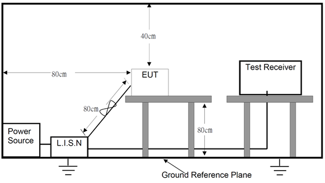
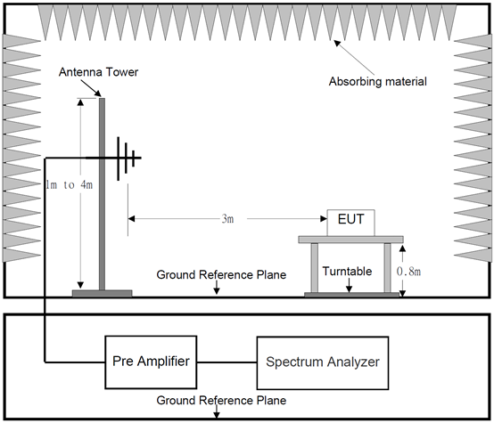
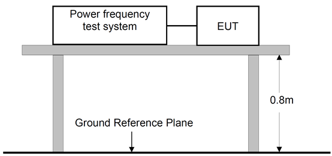
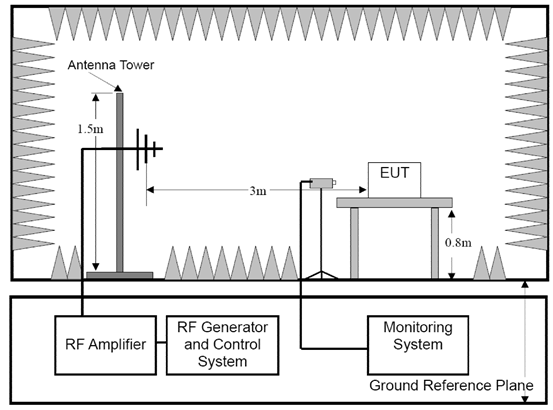
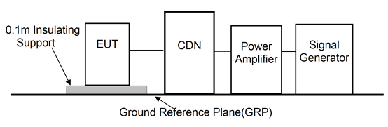
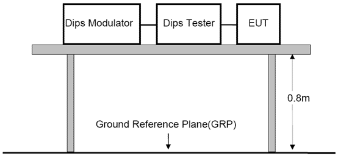
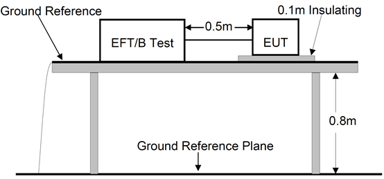
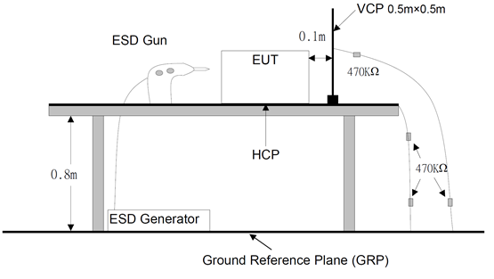
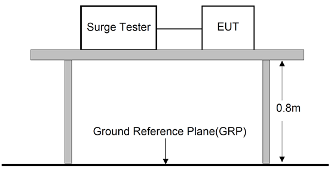

emc测试规范
编写目的
公司研发的LoRa网关，节点等产品整机 EMC测试指导。
定义说明
EMC 即电磁兼容，Electromagnetic Compatibility 我们把电磁能量对电子设备的这种影响称之为电磁干扰。就是它不会因为周边的电磁环境而导致性能降低、功能丧失或损坏，也不会在周边 环境中产生过量的电磁能量，以致影响周边设备的正常工作。
EMC 包含了以下三个方面的含义：
EMI 电磁干扰：即处在一定环境中设备或系统，在正常运行时，不应超过相应标准。
EMS电磁敏感度：即处在一定环境中设备或系统，在正常运行时，设备或系统能承受相应标准规定范围内的电磁能量干扰。
电磁环境：即系统或设备的工作环境。
名词解释
| RGP | Reference Ground Plane 一块导电平面，其电位用作公共参考电位 |
|---|---|
| 耦合网络 | 将能量从一个电路传送到另一个电路的电路 |
| 去耦网络 | 用于防止施加到 EUT 上的浪涌信号影响其他辅助实验的设备 |
| RE | Radiated Emission 辐射骚扰 |
| EUT | Equipment Under Test 受试设备 |
| AE | Auxiliary Equipment 辅助设备 |
| CDN | Coupling & Decoupling Net 耦合、去耦合网络 |
| AMN | Artificial Mains Network人工电源网络 |
| ISN | Impedance Stabilization Network阻抗稳定网络 |
注：
AMN：人工电源网络，为了在端子电压测量点上提供规定的高频阻抗，并把被测电路和电网上的背景噪声隔离开，需要使用到 AMN。在相线与参考地之间、中线与参考地之间测量传导骚扰。
ISN：阻抗稳定网络。ISN（包括校准时需要与 EUT和 AE连接的所有转接头）应能提供足够
的隔离，以隔离那些来自与受试电信端口相连的 AE和负载的骚扰。
测试项目及参考标准
| Standard | Description | Remark | |
|---|---|---|---|
| Emission | EN 55032 | Radiated Emission 辐射骚扰 |
Below 1GHz Above 1GHz |
| EN 55032 | Conducted Emission 传导骚扰 |
AC Mains Port DC Power Port Wired Network Port |
|
| EN 61000-3-2 | Harmonic Current Emissions 谐波电流 |
||
| EN 61000-3-3 | Voltage Fluctuations & Flicker 电压波动与闪烁 |
||
| Immunity | EN 61000-4-2 | Electrostatic Discharge Immunity 静电放电抗扰度 |
|
| EN 61000-4-3 | Radiated RF Electromagnetic Field Immunity 辐射射频电磁场抗扰度 |
||
| EN 61000-4-4 | Electrical Fast Transient/Burst Immunity 电快速瞬变脉冲群抗扰度 |
AC Port DC Port Wired Network Port |
|
| EN 61000-4-5 | Surge Immunity 浪涌抗扰度 |
AC Port Wired Network Port |
|
| EN 61000-4-6 | Immunity to Conducted Disturbances Induced by RF Fields 射频场感应的传导骚扰抗扰度 |
AC Port DC Port Wired Network Port |
|
| EN 61000-4-11 | Voltage Dips and short Interruptions Immunity 电压暂降,短时中断和电压变化抗扰度 |
||
测试环境
在下列温度湿度以及气压极限范围内的任一组合的条件下来进行测量和机械方面的检验：
环境温度：15~35℃
相对湿度：30%~60%
气压：86~106kPa
测试样机
由项目组提供单板样机，确定最新硬件配置，并升级最新固件。
NPI工程师负责组装新整机，安装对应新机壳和整机附件(指定电源，散热片等)
测试人员样机领用签名，资产挂账记录。
测试通过的样机许保留封样，以便追溯。
测试策略
| EMC | Description | 适用产品 |
|---|---|---|
| Emission | RE | 所有产品 |
| CE | 所有产品 | |
| Harmonic Current | 目前产品不适用 | |
| Voltage Fluctuations & Flicker | 网关或带AC Mains产品 | |
| Immunity | RS | 所有产品 |
| CS | 网关或 带AC Mains，LAN口产品 | |
| EFT | 网关或 带AC Mains，LAN口产品 | |
| Surge | 网关或 带AC Mains，LAN口产品 | |
| ESD | 所有产品 | |
| DIP | 网关或带AC Mains产品 | |
| Electromagnetic Field | 所有产品 |
测试项目
传导骚扰(CE)
测试框图Block Diagram of Test Setup

限值Limit
我司产品都属于Class B 类产品，默认应做 B类设计；超过限值线即属于 FAIL，由于实验室之间的差异性，需要设定余量线以确保通过的概率，即 3dB 余量；最终结果以官方实验室测试数据为准。
以下为EN55032标准
Requirements for conducted emissions from the AC mains power ports of Class A equipment
| Frequency range(MHz) | Limits dB(µV) | |
|---|---|---|
| Quasi-peak | Average | |
| 0.15 to 0.5 | 79 | 66 |
| 0.5 to 30 | 73 | 60 |
Requirements for conducted emissions from the AC mains power ports of Class B equipment
| Frequency range(MHz) | Limits dB(µV) | |
|---|---|---|
| Quasi-peak | Average | |
| 0.15 to 0.5 | 66 to 56 | 56 to 46 |
| 0,5 to 5 | 56 | 46 |
| 5 to 30 | 60 | 50 |
Requirements for asymmetric mode conducted emissions from Class A equipment
| Frequency range(MHz) | Voltage Limits dB(µV) | Current LimitsdB(µA) | ||
|---|---|---|---|---|
| Quasi-peak | Average | Quasi-peak | Average | |
| 0.15 to 0.5 | 97 to 87 | 87 to 74 | 53 to 43 | 40 to 30 |
| 0.5 to 30 | 87 | 74 | 43 | 30 |
Requirements for asymmetric mode conducted emissions from Class B equipment
| Frequency range(MHz) | Voltage Limits dB(µV) | Current Limits dB(µA) | ||
|---|---|---|---|---|
| Quasi-peak | Average | Quasi-peak | Average | |
| 0.15 to 0.5 | 84 to 74 | 74 to 64 | 40 to 30 | 30 to 20 |
| 0.5 to 30 | 74 | 64 | 30 | 20 |
测试策略Test strategy
网关和模块都需要测试
| Categories | Port | Limit |
|---|---|---|
| Gateway | Line | Class B |
| Neutral | Class B | |
| POE/Lan | Class B | |
| Module/Node | Line | Class B |
| Neutral | Class B |
测试步骤Test Procedure
确认产品是否接地，默认产品有接地设计，则应接地；浮地设计时需要根据实际情况来，若 接地后测试结果有改善，可建议增加 GND 设计。
网口默认是非屏蔽网线，需要使用电压法测试；若是屏蔽线则使用电流法（极少）。
设备按照相应测试要求组网，连接好 EUT、AE、CDN 等，待测设备上电开机，正常使用场景，检查设备工作状态是否正常。
开始测试，根据测试情形记录表描述的情形进行具体产品的测试。
辐射骚扰(RE)
测试框图Block Diagram of Test Setup

限值Limit
我司产品都属于Class B 类产品，默认应做 B类设计；超过限值线即属于 FAIL，由于实验室之间的差异性，需要设定余量线以确保通过的概率，即 3dB 余量；最终结果以官方实验室测试数据为准。
以下为EN55032标准
Requirements for radiated emissions at frequencies up to 1 GHz for class A equipment
| Frequency range (MHz) | Distance (m) | Quasi-peak Limits dB (µV/m) |
|---|---|---|
| 30 to 230 | 10 | 40 |
| 230 to 1000 | 47 | |
| 30 to 230 | 3 | 50 |
| 230 to 1000 | 57 |
Requirements for radiated emissions at frequencies above 1 GHz for class A equipment
| Frequency range(MHz) | Distance (m) | Limits dB(µV) | |
|---|---|---|---|
| Average | Peak | ||
| 1000 to 3000 | 3 | 56 | 76 |
| 3000 to 6000 | 60 | 80 | |
Requirements for radiated emissions at frequencies up to 1 GHz for class B equipment
| Frequency range (MHz) | Distance (m) | Quasi-peak Limits dB (µV/m) |
|---|---|---|
| 30 to 230 | 10 | 30 |
| 230 to 1000 | 37 | |
| 30 to 230 | 3 | 40 |
| 230 to 1000 | 47 |
Requirements for radiated emissions at frequencies above 1 GHz for class B equipment
| Frequency range(MHz) | Distance (m) | Limits dB(µV) | |
|---|---|---|---|
| Average | Peak | ||
| 1000 to 3000 | 3 | 50 | 70 |
| 3000 to 6000 | 54 | 74 | |
测试策略Test strategy
网关和模块都需要测试
| Category | Polarization | Limit |
|---|---|---|
| Gateway/Module | Horizontal | Class B |
| Vertical | Class B |
注意事项Note
首先确认测试样机的软硬件版本，电源型号，机壳类型，螺丝孔锁紧，线材长度固定等。
注意辅助设备必须不能带入新的辐射，例如POE模块、笔记本应置于暗室之外，通过线缆进行连接。
测试过程中注意线缆的连接可能因转台转动而接触不良，例如电源线，可能会引起测试数据有偏差。
产品默认应该测试典型正常工作的情形，例如LoRa, WIFI, LTE, ethernet等需要正常工作。
测试过程中，详细描述备注情况，留意数据变化，差异明显时，现场确认环境是否一致。
谐波电流(Harmonic)
测试框图Block Diagram of Test Setup
限值Limit
| Limits for Class A equipment | Limits for Class D equipment | |||
|---|---|---|---|---|
| Harmonics Order n | Max. permissible harmonics current A | Harmonics Order n | Max. permissible harmonics current per watt mA/W | Max. permissible harmonics current |
| A | ||||
| Odd harmonics | ||||
| 3 | 2.3 | 3 | 3.4 | 2.3 |
| 5 | 1.14 | 5 | 1.9 | 1.14 |
| 7 | 0.77 | 7 | 1 | 0.77 |
| 9 | 0.4 | 9 | 0.5 | 0.4 |
| 11 | 0.33 | 11 | 0.35 | 0.33 |
| 13 | 0.21 | 13 | 0.3 | 0.21 |
| 15＜＝n＜＝39 | 0.15×15/n | 15＜＝n＜＝39 | 3.85/n | 0.15×15/n |
| Even harmonics | ||||
| 2 | 1.08 | |||
| 4 | 0.43 | |||
| 6 | 0.3 | |||
| 8＜＝n＜＝40 | 0.23×8/n | |||
测试策略Test strategy
According to EN 61000-3-2: 2014 section 7: Equipment with a rated power of 75 Watt or less, other than lighting equipment, are not included in this standard.
由于我们的当前产品功率都小于75W，故这项测试可忽略。
电压变化与闪烁(Flicker)
测试框图Block Diagram of Test Setup

Test Standard:EN 61000-3-3:2013 / IEC 61000-3-3: 2013
限值Limit
| Test Item | Limit |
|---|---|
| Pst(Short-term flicker indicator.) | 1.0 |
| Plt(Long-term flicker indicator.) | 0.65 |
| Td(t)(ms)(Maximum time that d(t)exceeds 3.3%) | 500 |
| dmax(%)(Maximum relative voltage change.) | 4 |
| dc(%)(Relative steady-state voltage change) | 3.3 |
测试策略Test strategy
目前需要测试的产品为网关等产品。
此测试项目只针对含有适配器或者电源模块的产品。
射频电磁场辐射抗扰度(RS)
测试框图Block Diagram of Test Setup

试验等级Severity level
| Level | Field Strength V/m |
|---|---|
| 1. | 1 |
| 2. | 3 |
| 3. | 10 |
| X | Special |
测试策略Test strategy
网关和模块都需要测试
传导抗扰度(CS)
测试框图Block Diagram of Test Setup

试验等级Severity level
| Level | Field Strength V |
|---|---|
| 1. | 1 |
| 2. | 3 |
| 3. | 10 |
| X | Special |
测试策略Test strategy
目前需要测试的产品为网关等产品。
此测试项目只针对含有适配器或者电源模块的产品。
电压暂降和短时中断(DIP)
测试框图Block Diagram of Test Setup

试验等级Severity level
| Test Level (%UT) | Voltage dip and short interruptions (%UT) | Duration (in period) |
|---|---|---|
| 0 | 100 | 0.5 |
| 1 | ||
| 40 | 60 | 5 |
| 10 | ||
| 70 | 30 | 25 |
| 50 | ||
| * |
测试策略Test strategy
目前需要测试的产品为网关等产品。
此测试项目只针对含有适配器或者电源模块的产品。
电快速脉冲群抗扰度(EFT)
测试框图Block Diagram of Test Setup

试验等级Severity level
| Level | On power port, PE | On I/O (Input/Output) Signaldata and control ports | ||
|---|---|---|---|---|
| Voltage peak (KV) | Repetition rate(KHz) | Voltage peak (KV) | Repetition rate(KHz) | |
| 1 | 0.5 | 5 or 100 | 0.25 | 5 or 100 |
| 2 | 1 | 5 or 100 | 0.5 | 5 or 100 |
| 3 | 2 | 5 or 100 | 1 | 5 or 100 |
| 4 | 4 | 5 or 100 | 2 | 5 or 100 |
| X | Special | Special | Special | Special |
Note 1 Use of 5 KHz repetition rates is traditional; however, 100 KHz is closer to reality. Product committees should determine which frequencies are relevant for specific products or product types.
Note 2 With some products, there may be no clear distinction, between power ports and I/O ports, in which case it is up to product committees to make this determination for test purposes.
Note 3 “X” is an open level. The level has to be specified in the dedicated equipment specification.
测试策略Test strategy
目前需要测试的产品为网关等产品。
此测试项目只针对含有适配器，电源模块或带有LAN口的产品。
静电放电抗扰度(ESD)
测试框图Block Diagram of Test Setup

试验等级Severity level
| Level | Test Voltage Contact Discharge (KV) | Test Voltage Air Discharge (KV) |
|---|---|---|
| 1 | ±2 | ±2 |
| 2 | ±4 | ±4 |
| 3 | ±6 | ±8 |
| 4 | ±8 | ±15 |
| X | Special | Special |
测试步骤Test Procedure
| 分类 | 测试点 | |
|---|---|---|
| 接触放电(ContactDischarge) | 螺丝孔，DC电源接口，RJ45网口，天线接口，SIM卡槽，SD卡槽 | |
| 空气放电(AirDischarge) | 外壳表面，缝隙等 | |
| 间接放电(Indirect discharge) | HCP | EUT 四周 |
| VCP | EUT 四周 | |
浪涌抗扰度(Surge)
测试框图Block Diagram of Test Setup

试验等级Severity level
| Severity Level | Open-Circuit Test Voltage KV |
|---|---|
| 1 | 0.5 |
| 2 | 1.0 |
| 3 | 2.0 |
| 4 | 4.0 |
| * | Special |
测试策略Test strategy
目前需要测试的产品为网关等产品。
此测试项目只针对含有适配器，电源模块或带有LAN口的产品
AC Mains power input ports
| Coupling Line | Phase Angel | Test voltage |
|---|---|---|
| L-N | 0°, 90°, 180°, 270° | ±1.0KV |
| L-PE | 0°, 90°, 180°, 270° | ±2.0KV |
| N-PE | 0°, 90°, 180°, 270° | ±2.0KV |
Signal port: RJ45
| Coupling Line | Phase Angel | Test voltage |
|---|---|---|
| Line-GND | 0°, 90°, 180°, 270° | ±1.0KV |
具体电压等级需要查看适配器和产品规格。